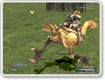

パーティプレイでの経験値ボーナスを大人数のパーティにとってより有利な様に、更に増加しました。
自分より格上のレベルの敵を倒した際の獲得経験値を レベル差に応じてより多く得られる様にしました。
精霊魔法などの属性を伴った攻撃魔法が、 相手の弱点属性であった場合にレジストされる率が大幅に低減されています。 敵の弱点や曜日属性、天候などの影響も加味して効果的な魔法を選択しましょう。 なお、弱点以外の属性での攻撃は従前通りの挙動となります。
これらを補助するため、時間表示オンの場合は 画面左下のコンパス部に、現在の曜日と天候属性が表示される様になりました。 時間表示及び曜日、天候属性表示のオンオフはメニューの現在時刻を選択する度に切り替えられます。 もともと天候には強属性となる天気があり、この時は天候属性アイコンが2個並んで表示され、 天候の影響がより強い状態である事が確認できます。
(天候や曜日属性の影響自体は従前より存在しています)
スリプル、ブライン、バインド等の弱体魔法が敵との レベル差でレジストされる率を緩和しました。 なお、弱点以外の属性での攻撃は従前通りの挙動となります。
吟遊詩人に以下の新しい対敵用戦闘歌が追加されました。
■各属性レジスト低下ソング
・炎のスレノディ ・氷のスレノディ
・風のスレノディ ・土のスレノディ
・雷のスレノディ ・水のスレノディ
・光のスレノディ ・闇のスレノディ
■補助魔法無効化ソング
・魔法のフィナーレ
白魔法テレポ3種、黒魔法デジョンIIがそれぞれ解禁されました。 各テレポの使用には、対応するゲートクリスタルが必要です。
また、白魔法シェルラ、プロテアIIも入手可能となりました。
回復魔法が以前よりも若干敵をひきつけやすくなっています。 戦闘中の回復魔法使用に御注意ください。
戦士のジョブアビリティ「マイティストライク」の効果継続時間が、 以前の1.5倍になっています。
バトル中でも、△ボタンで通常時と同様に、 過去ログやステータスアイコンなどを選択できる様になりました。
また、リアクティブサイズウィンドウモード時には、バトル中でも、×ボタンで一時的に表示行数を減らす事が可能になりました。
過去ログ閲覧時に、△ボタンを押すことによって、 各種会話チャンネルだけを抜粋して表示する簡易フィルタリングができるようになりました。 但し、フィルタリング実行中の閲覧範囲は、ある程度制限されます。
救援要請が行われた最も近いモンスターに対して、 救助に向かいやすい様、コンパスで自動的に追尾するようになりました。
Destiny : Mummyにやられる！
たすけて！！！！！
現在自分のいる場所のブロック座標を会話中に 代名詞<pos>で表現可能になりました。
フレンドリストからの着信拒否時に確認のウィンドウが 出るようになりました。
サーチでエリア選択を実行中に△ボタンを押すと、 リージョンを選択できるモードに切り替えられる様になりました。 リージョンを選択すると、そのリージョン内のエリアだけのリストが表示されます。 もう一度△ボタンを押すと全エリアリストに戻ります。
サーチ結果表示で、既にパーティに入っている人が 色分けで表示されるようになりました。
各地の鉱山において様々な鉱石の「採掘」が可能になりました。 ツェールン、パルブロ、グスゲンなど各鉱山の採掘ポイントで、アイテムリストから「つるはし」を使用し、 Mining Pointをターゲットすると、レア鉱石などの各種鉱石が獲得できる可能性があります（トレードでも可）。
各Mining Pointは一回の採掘のみ有効で、一度採掘されると、別の場所へと移動します。
いくつかのダンジョンの奥地に「謎の宝箱」が出現する様になりました。 これらの宝箱を開けるためにはカギが必要です。 また、一度開けるとその宝箱は消え、一定時間経過後に別の場所に出現します。 宝箱からのアイテムは、パーティの場合には戦利品扱いとなり、パーティ内でロットイン出来るようになります。
複数の新しいクエストが追加されました。
※当初予定されていたモグ金庫の上限数を拡張するクエストは、一部不具合が発見され
再調整のため、次回8/20頃のバージョンアップ時の導入に延期されました。
以下の既存クエストの報酬や達成条件などが変更されています。 一部を除き主に報酬増、難易度低下となります。
「貴婦人の所望」「平穏なる日々」「灯台もと暗し」「心の壁」「砂丘に舞う光」「臥竜の滝」
「特ダネ・ウィンダス」「伝説の大作戦」「夜空はコイン」「3本の杖」「補給物資」「ライバル」
「工房長の秘密」「ゴキゲンナナメな機械」「インソムニアの女」「黒の技」
各街に冒険者の名声を教えてくれるNPCを配置しました。 各国でのクエストの発生にはクエストコンプリート数ではなく、冒険者としての名声度が関与しています。 これらの名声度は、難易度の高いクエスト、1回しかできないクエストほどあがりやすくなっています。
また、そのクエストの結果によって変化することもあります。
各街にプレイヤーの称号を変更してくれるNPCを配置しました。 クエストクリア時に不本意な称号をつけられてしまった場合などに御利用ください。
本来釣れてはならない高級魚が、稀に低スキルの釣人で 釣れてしまう事があった不具合を修正しました。
また、釣りのスキルが以前に比べ、上がりやすくなる様に変更しました。
アイテム合成時に同一アイテムを複数個使用する場合、 1スロットで数量を指定できるようになりました。これにより、スタックしたアイテムを事前に手動並べ替え等で分解しておく必要がなくなりました。
メニュー：ステータス：合成スキル一覧の表示で、 現在のランクと共に、現在のスキルポイントも表示する様になりました。
また、クリスタル使用時にはスキルポイントのみの一覧表示へと変更しました。
モグハウス内での合成が可能になりました。
モグハウスでのジョブチェンジは、画面を変えずに その場でスピーディーに行える方式に変更されました。 かつてのジョブチェンジ画面は、今後見ることができなくなります。
モグハウスでのポスト確認時に、 競売所から送られた落札代金の表示方法が変わりました。 ポスト内のアイコンも見やすくなりました。
チョコボ利用料金は、プレイヤー達の単位時間あたりの 利用率に応じて変化しますが、利用者がレベル50未満であった場合、その時点での利用料金からレベル差分割引されることになりました。 即ち利用者がレベル20であった場合は最大の3割引となります。

コンクェストに新たな報酬アイテムが追加されました。 これらの新報酬アイテムはコンクェスト結果の国家順位に依存して出現します。
サンドリア出身のタルタル♀に「サンドリア式敬礼」の モーションが再度実装されました。(/salute)
Windowsβ版でも、「ONLINE DATA FILE」が使用可能になりました。
今回のバージョンでは、事前告知されています通り、既存のレシピに対する新しいハイクォリティ合成品が作成可能になっておりますが、これらとは別の新しい合成品のレシピの追加については、次回以降のバージョンアップに延期されました。導入時期が決定次第改めてお知らせいたします。
8月のスペシャルイベントは8/24〜8/25の二日間を予定しております。この期間中ならいつでも途中参加、中断、離脱可能です。推奨レベルは全レベル、参加人数も自由です。イベントの詳細は近日中に発表いたします。
>> close <<